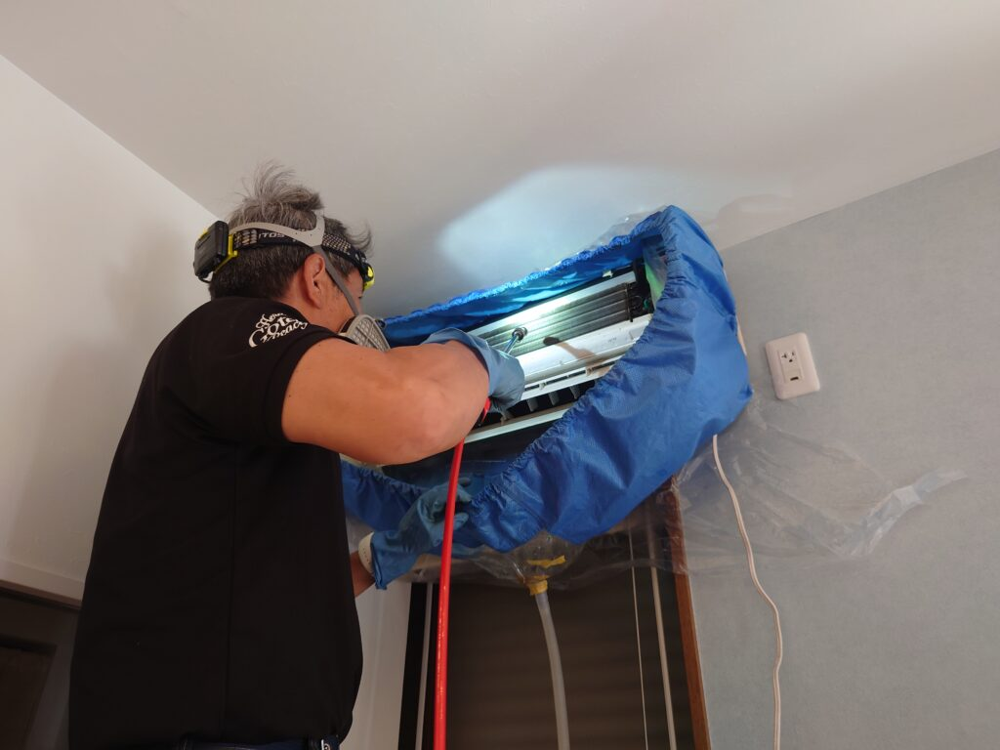
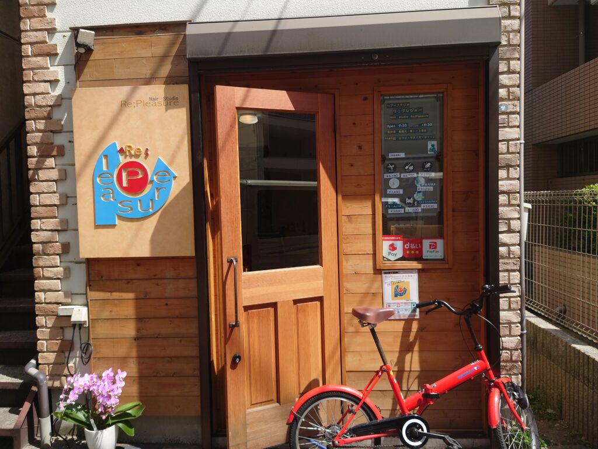
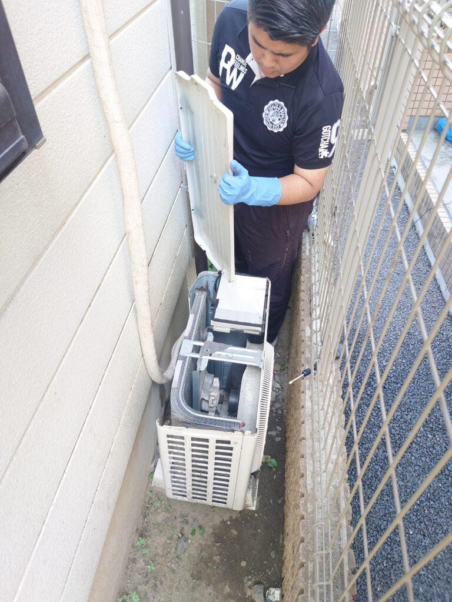
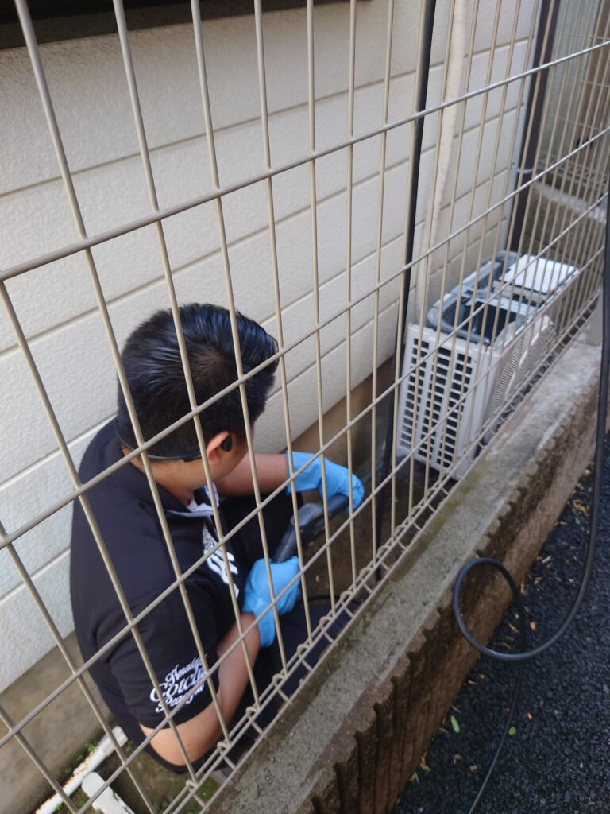
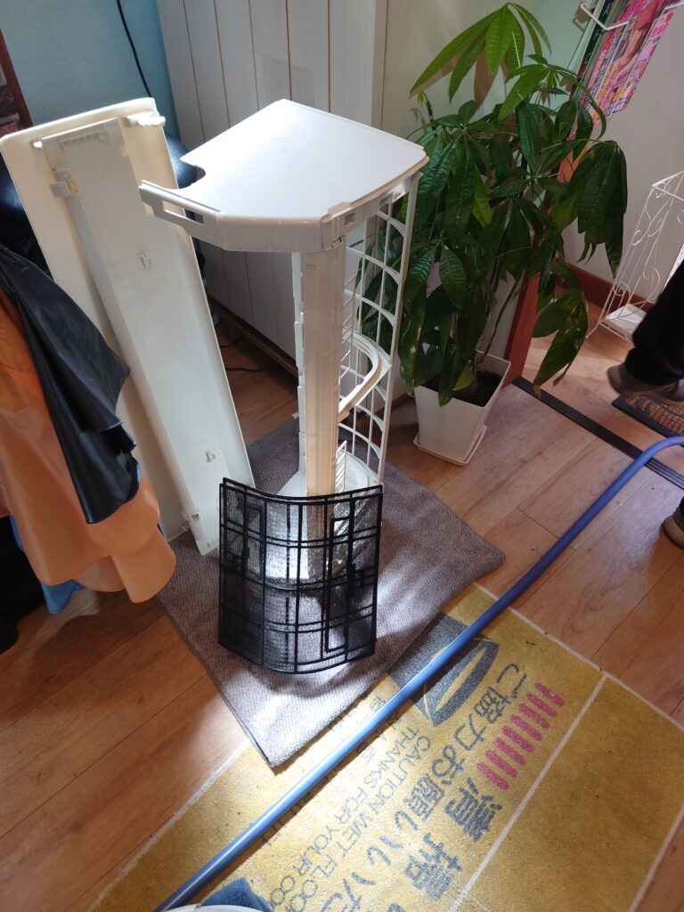

横浜綱島のヘアースタジオＲ様のエアコンクリーニング、室外機高圧洗浄クリーニングをしました!

横浜綱島にありますヘアースタジオＲ様のエアコンと室外機高圧洗浄クリーニングをしました!ヘアースタジオさんなので、エアコンカバー、室外機のカバーを外すと見慣れた汚れに混じってピンク色などの普段はあまり見かけない色素の堆積が有りました、ヘアースプレーなどのカラー色素がエアコンの排気に吸着されていたようです、スッキリ綺麗にクリーニングして全て綺麗になりました!ぜひDAIZENメソッドを駆使したエアコンプロフェッショナルクリーニングをご利用下さい、宜しくお願いいたします!



